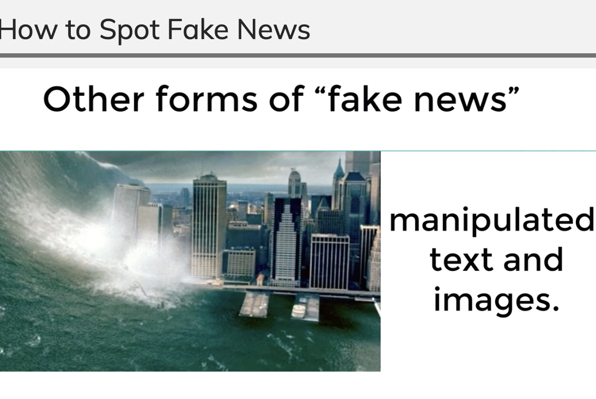
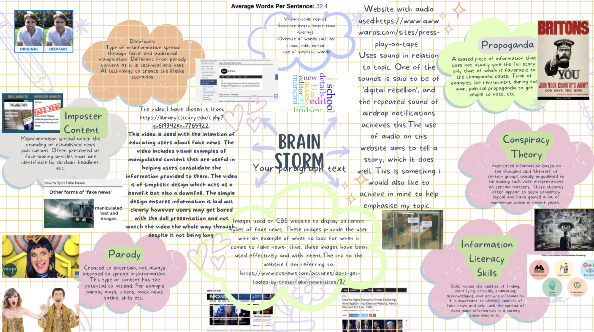

Task 1
For this task I explored the use of video on the web. The following analysis is on the first video shown on the following web page:
"College of Staten Island website"
The videos provided on this website are used for the purpose of educating users about what fake news is and how to spot it.
An example of video used with intent can be seen in the video provided on the website. Within the video images are provided to show examples of real news sources versus fake news sources. For example, an image is provided in the video that shows users an example of manipulated content, of which I have attached below. This enhances information retention for users because it provides them with a visual example of the information they are being provided with.

Image shows a manipulated image of a tsunami
Benefits of the video lay within its simplistic nature. The video clearly defines fake news and takes each step at a slow pace to ensure users are following along and absorbing the information provided.
Possible caveats of the video, however, also lay within its simplistic nature. The video as a whole, while informative, is dull and lacks any interesting use of colour, animation etc which some users may get bored by.
The length of the video is suitable enough for its purpose of educating. It sets out the necessary information without going on for too long while simultaneously not skipping past any important information that would make it shorter in length.
My updated moodboard

The image is of a moodboard that displays my creative process
Task 2
For this task I searched the web for videos that relate to my topic, both of which I have attached below:
This video is of a man reading a news paper with a protective suit and mask on. This is reflective of how poisonous the news can be- especially when it is fake. Thus, the man reading the newspaper does not want to be infected by the dangers some sources of news are plagued by.
This video shows a pupil being tauht by her teacher. This relates to my topic as it displays a type of educational setting, thus implying the importance of education. This is something that I have repeatdely stressed throughout, especially in reltion to the importance of being taught information literacy skills in the battle agaisnt fake news
For this task I combined both of my videos to create an alternative video that highlights a flowing narrative of my topic. the video goes from a man in a protective suit in a mask reading a newspaper, to a teacher and pupil in a classroom setting, and back into the man eventually closing the newspaper. I chose this particular sequence because I find it tells a story; I see it as a man protecting himself from the news, but through the correct education the newspaper can be shut and the reader can be confident in their skills to detect if what they have just read seems reliable or not. There are three versions of my video, each in different qualities that I have attached below:
Video 001- High quality
Video 002- Medium quality
Video 003- Low quality
(audio credit:"GreyHoney")
Overall, I think my video flows seamlessly and has the intended effect of creating a narrative path of which my topic follows; overwhelmed by fake news> being taught information literacy skills> being able to cope with the fluctuation of news sources better. I did not want to overwhelm my video with effects, etc because I felt as though it would be overstimulating, especially for those who suffer from conditions like ADHD, etc. Thus, my video incorporates the use of title cards, audio and split clips.